Invitation
Private is framed with restraint, enough detail to feel considered, and a private route forward.
Contact / 01
Contact opens as a clear luxury decision hub: what Maison offers, who it helps, why it matters, and which route to take first.
The first screen combines positioning, proof, primary action, and fast internal navigation, so people can act immediately or compare the rest of the contact route with context.
Deep-green private hero
Select the closest route and Maison keeps the next step, proof, and follow-up expectation aligned with status and discretion.
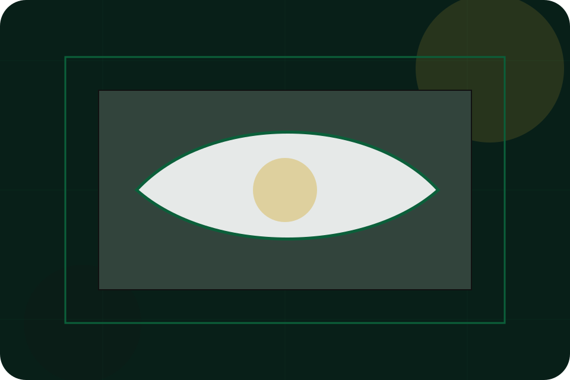
Contact / 02
Private makes the contact path concrete: what to send, how the response works, and what Maison needs before visitors request private access.
The section reduces contact friction by naming the channel, expected detail, privacy path, and response expectation instead of dropping visitors into a generic form.
Request Private Access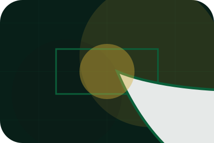
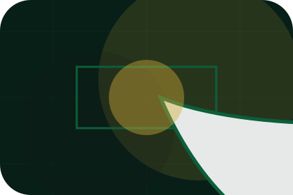
Private is framed with restraint, enough detail to feel considered, and a private route forward.
Contact / 03
Appointment makes the contact path concrete: what to send, how the response works, and what Maison needs before visitors request private access.
The section reduces contact friction by naming the channel, expected detail, privacy path, and response expectation instead of dropping visitors into a generic form.
Request Private AccessAppointment is framed with restraint, enough detail to feel considered, and a private route forward.
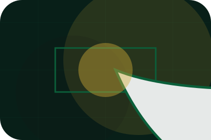
The proof appears through standards, context, and carefully chosen visual evidence rather than volume.
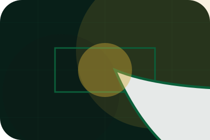
The next action explains what to send, when to expect a response, and how access is handled.
Contact / 04
Concierge makes the contact path concrete: what to send, how the response works, and what Maison needs before visitors request private access.
The section reduces contact friction by naming the channel, expected detail, privacy path, and response expectation instead of dropping visitors into a generic form.
Request Private AccessConcierge is framed with restraint, enough detail to feel considered, and a private route forward.
The proof appears through standards, context, and carefully chosen visual evidence rather than volume.
The next action explains what to send, when to expect a response, and how access is handled.
Contact / 05
Location makes the contact path concrete: what to send, how the response works, and what Maison needs before visitors request private access.
The section reduces contact friction by naming the channel, expected detail, privacy path, and response expectation instead of dropping visitors into a generic form.
Request Private AccessLocation is framed with restraint, enough detail to feel considered, and a private route forward.
The proof appears through standards, context, and carefully chosen visual evidence rather than volume.
The next action explains what to send, when to expect a response, and how access is handled.
Contact / 06
Response makes the contact path concrete: what to send, how the response works, and what Maison needs before visitors request private access.
The section reduces contact friction by naming the channel, expected detail, privacy path, and response expectation instead of dropping visitors into a generic form.
Request Private AccessResponse is framed with restraint, enough detail to feel considered, and a private route forward.
The proof appears through standards, context, and carefully chosen visual evidence rather than volume.
The next action explains what to send, when to expect a response, and how access is handled.
Contact / 07
Privacy makes the contact path concrete: what to send, how the response works, and what Maison needs before visitors request private access.
The section reduces contact friction by naming the channel, expected detail, privacy path, and response expectation instead of dropping visitors into a generic form.
Request Private Access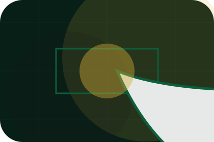
Privacy is framed with restraint, enough detail to feel considered, and a private route forward.
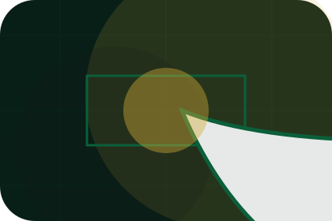
The proof appears through standards, context, and carefully chosen visual evidence rather than volume.
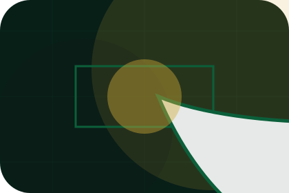
The next action explains what to send, when to expect a response, and how access is handled.
Contact / 08
Form makes the contact path concrete: what to send, how the response works, and what Maison needs before visitors request private access.
The section reduces contact friction by naming the channel, expected detail, privacy path, and response expectation instead of dropping visitors into a generic form.
Request Private AccessMaison keeps form practical: send the key details, choose the right contact route, and know what kind of reply to expect.
Request Private Access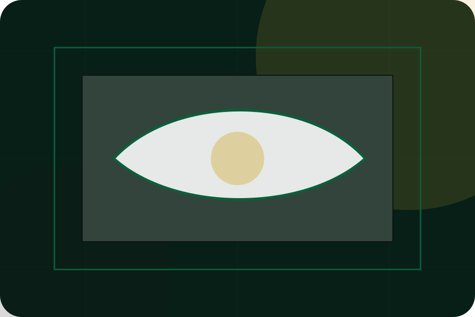
Contact / 09
Submit makes the contact path concrete: what to send, how the response works, and what Maison needs before visitors request private access.
The section reduces contact friction by naming the channel, expected detail, privacy path, and response expectation instead of dropping visitors into a generic form.
Request Private AccessSubmit is framed with restraint, enough detail to feel considered, and a private route forward.
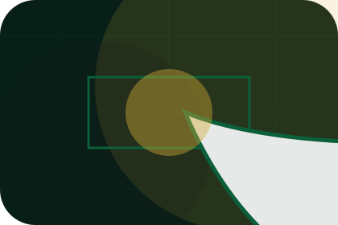
The proof appears through standards, context, and carefully chosen visual evidence rather than volume.
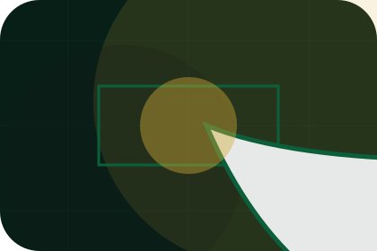
The next action explains what to send, when to expect a response, and how access is handled.
Contact / 10
Maison closes the contact route with a clear action, a quick reminder of the value, and a low-friction way to request private access.
Visitors who are ready can use the primary action. Visitors who are still comparing can scan the section links, proof, and support routes before they request private access.
Request Private AccessThe final block keeps the choice simple: act now, compare one more proof route, or send enough detail for a focused response.
Request Private Accessstatus and discretion
A luxury service site with green-gold maison mood, heritage cards, private access routes, and discreet proof. Contact ends with a direct path to request private access, plus enough context for visitors who still need to compare.
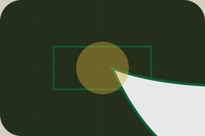
Request Private AccessInformation is provided for planning and should be reviewed for the final client, location, and operating rules.